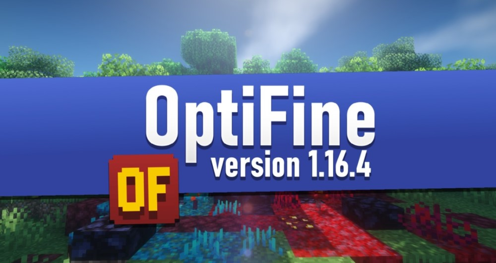

OptiFine – это отдельный мод, который был создан для оптимизации Minecraft. Благодаря этому моду, игра будет работать быстрее, а также текстуры будут более гладкими. Мод обладает множествами функций, которые упростят вам игру, не тратя на них дополнительное время, для скачивания посторонних программ. Установить на TLauncher OptiFine можно несколькими способами. Функции Optifine Функций очень много, но стоит выделить основные. Во-первых, мод увеличивает FPS. Также делает игровой процесс плавным, и лагов становится минимум. Поддерживает HD-текстуры и шейдеры.Back
